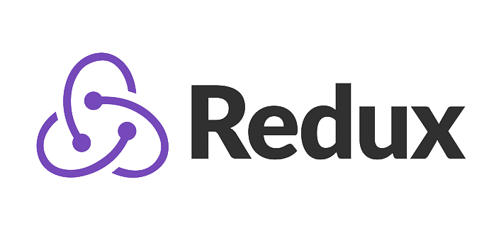

Hello! I'm Joel Baah
a Frontend Developer
I specialise in building responsive, high-performance and user focused web applications.
About Me
Passionate Frontend Developer with 5+ years of experience building interactive, responsive, and user-centric web applications. Skilled in React, JavaScript, HTML, CSS, and modern frontend frameworks. I thrive on translating designs into functional, engaging user experiences and am always looking to improve web performance and accessibility. I’m eager to contribute to innovative projects that challenge my skills and push the boundaries of what’s possible in web development.
With 4 years of commercial experience as a frontend developer, I’ve worked closely in cross-functional teams, collaborating with backend developers, senior frontend engineers, designers, and QA specialists. This environment has deepened my understanding of the full software development lifecycle and agile methodologies. I’ve gained hands-on experience with CI/CD pipelines, pair programming, peer reviews, and user support. In addition to team-based projects, I’ve also led and managed small-scale projects independently, building clean, reusable code using React.js and Redux. This blend of collaborative and solo work has strengthened both my technical and communication skills.

- 